メキシコ珍寺武者修行、いよいよ最後の修行の地である。
メキシコシティの中心部から1キロ程北にあるラグニージャ市場へと向かう。
ここは日曜日になると路上マーケットが開催され、別名泥棒市と呼ばれているそうな。

骨董品やガラクタ、民芸品、古書、古着、飲食店などがズラリと並ぶ。
もちろん人も多い。
この日曜市のすぐ近くはメキシコシティで最も危ないと言われるテピト地区なので人気のない道や奥まった場所などに足を踏み入れないよう、ご用心。
そんな一画にエクスヴォトを売っている店がある。
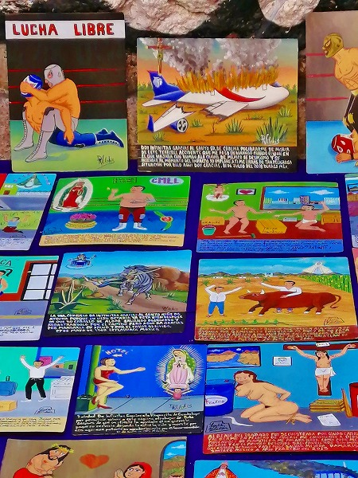
現代エクスヴォトを代表する絵師、オルフレッド・ビルチス氏が描いたエクスヴォトが販売されている。
店番はビルチス氏の息子さんがやっており、彼もエクスヴォトを描いているそうだ。
様々な題材のエクスヴォトが並んでおり、その多くは現代的なテーマの物が多いのが印象的だった。
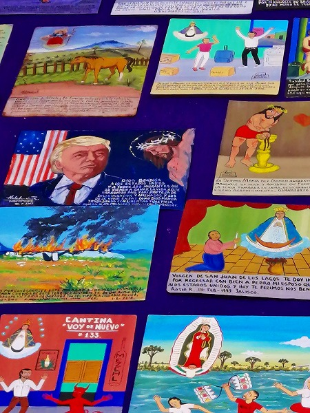
ちなみにお値段は普通のアンティークのエクスヴォトよりも高かったです。
エクスヴォト界の巨匠ですから。
他にもアンティークのエクスヴォトを売る店が幾つかあった。
これもまたオアハカなどと比べると高めだ。
エクスヴォトは意外と人気で、コレクターも多いと聞く。
私もこれまで何点かエクスヴォトを購入したが、値段は売っているところでまちまちでした。
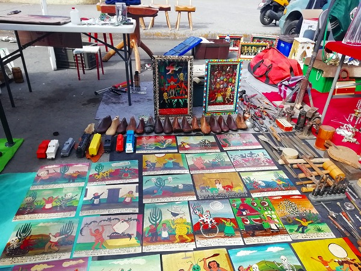
そんな中、凄いエクスヴォト屋さんを発見！
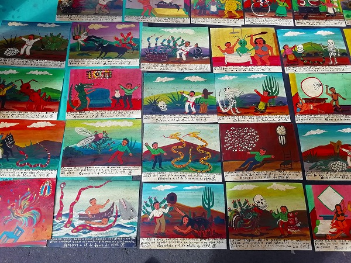
巨大生物や得体の知れない生き物などが現れる私好みのトンデモエクスヴォトだ。
全て同じ作者の手によるものだ。
名前を失念してしまったが、先程のビルチス氏が巨匠であれば新進気鋭の作家といえよう。
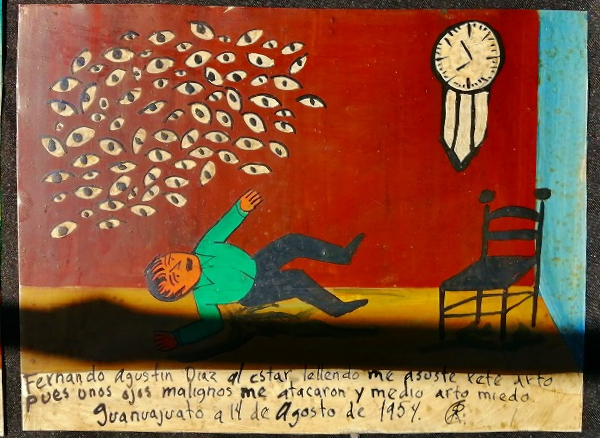
その作風はとにかくシュール！
邪悪な目に攻撃されたシーン。
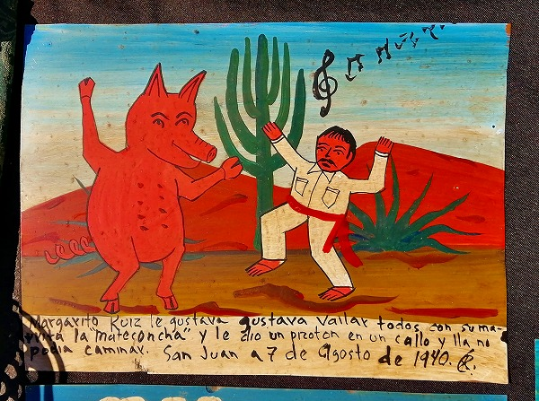
豚と踊るおっさん。
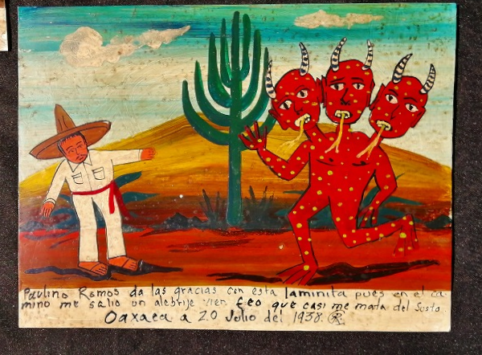
頭が三つある鬼の絵。
さんざん悩んだ挙句、コレを買いました！
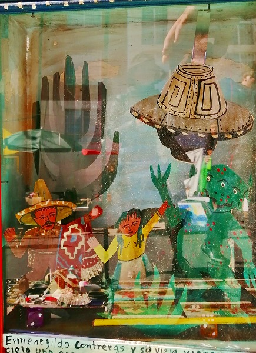
他にも、立体型エクスヴォトも売られている。
ここにもUFOや怪物など奇天烈なモチーフが満載だ。
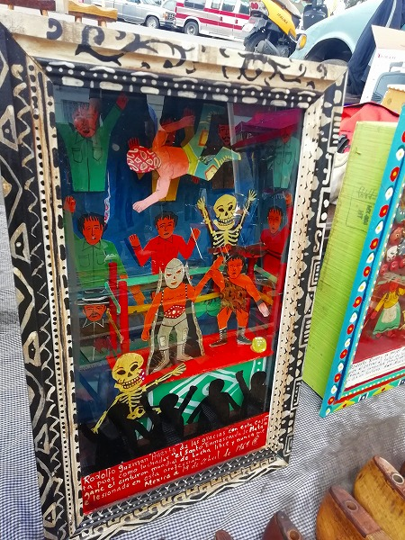
骸骨プロレス。
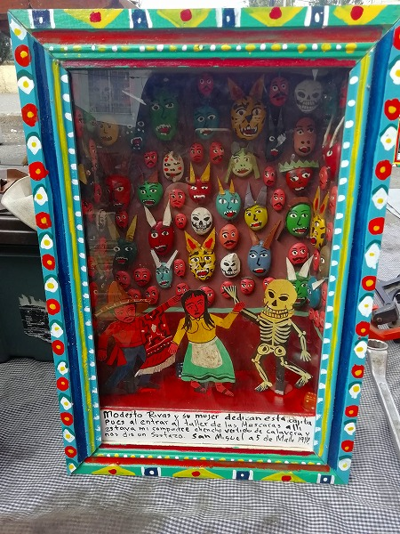
何やら民芸品のドールハウスを思わせるが、下にキッチリ文章が記されているのでエクスヴォトの一種とみていいだろう。
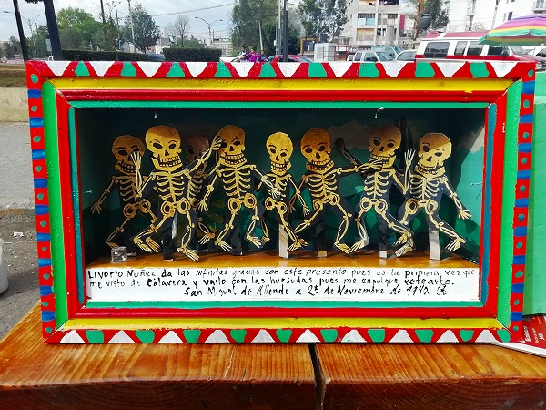
この作者の立体エクスヴォトに繰り返し登場するガイコツ君。
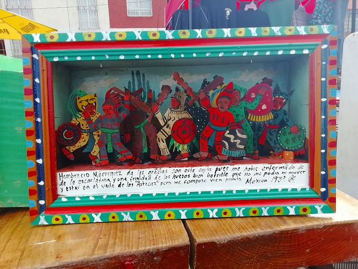
1938年という記述があるので、もしかしたら実際に奉納されていたエクスヴォトを立体的にリメイクしたのかもしれない。
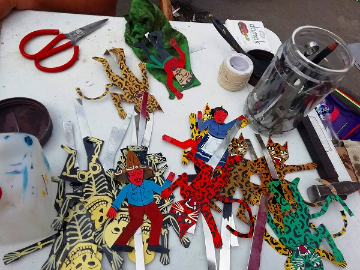
作者の方が店番をしながら制作していた。
ブリキを切り抜いた各種登場人物＆動物＆骸骨…
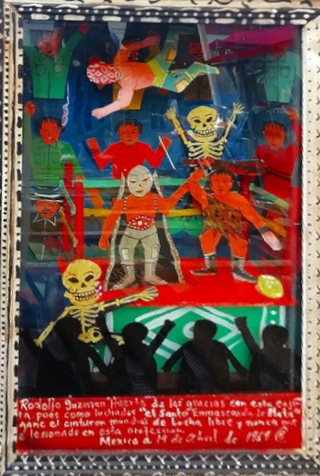
立体エクスヴォトは値段も高いし、持ち帰るのも難しそうだったので買えなかった。
が、あまりにも真剣に悩んでいたのを気の毒に思ったのか、作者からパーツのガイコツ君を一体貰ってしまったよう。
ありがとうございます…
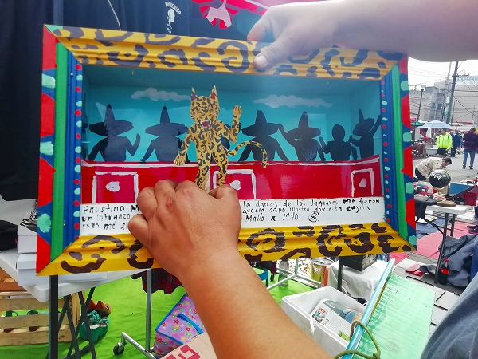
この立体エクスヴォト、もしかしたら今後人気になるような気がするので、お金とカバンに余裕がある方は買ってみてくだされ。
というわけでラグニージャ市場からのレポートは以上です。
これにてメキシコのエクスヴォトを巡る旅は終了。
あとは巨匠、ビルチス氏の個展が開かれていたのでその様子を観つつ、エクスヴォトとは何かを考えたい。
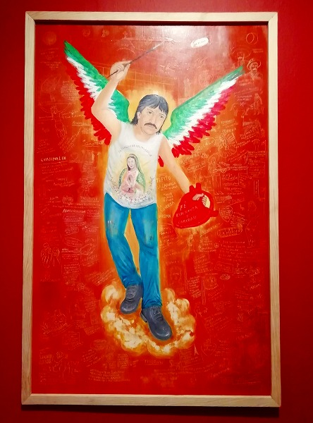
自画像。
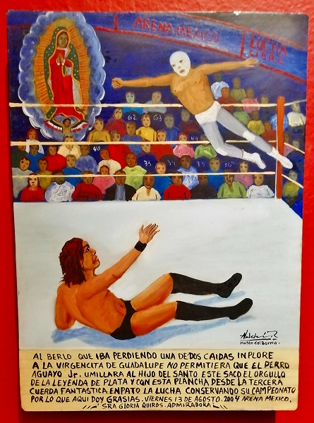
メキシコでは人気のルチャリブレ（プロレス）のエクスヴォト。
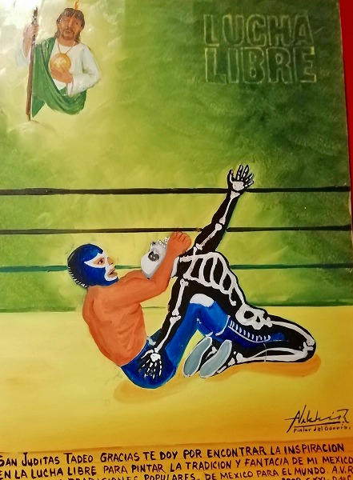
神へ勝利の感謝を捧げているものが多い。
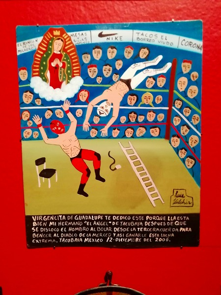
これは画風が違う気がする。
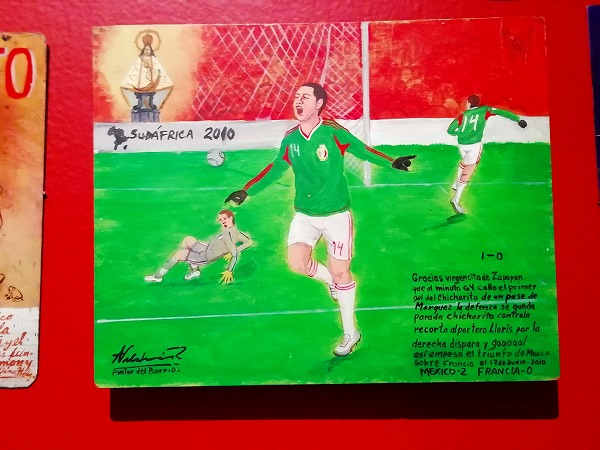
ルチャ同様人気のサッカー。
そういえばメキシコは野球も人気なのだが、どういう訳だか野球のエクスヴォトは見たことがない。不思議だ。
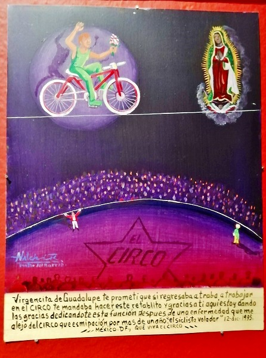
サーカスの綱渡り。
グアダルーペ様！そこにおられたら綱渡りできないって！
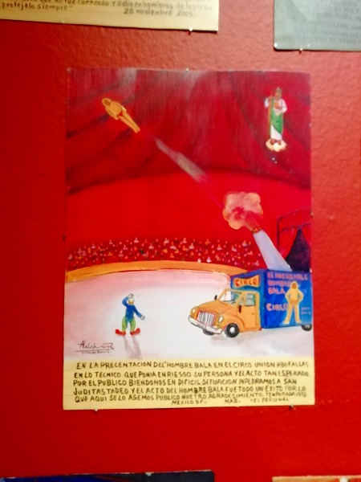
これまたサーカスの人間大砲。
命懸けですものね。
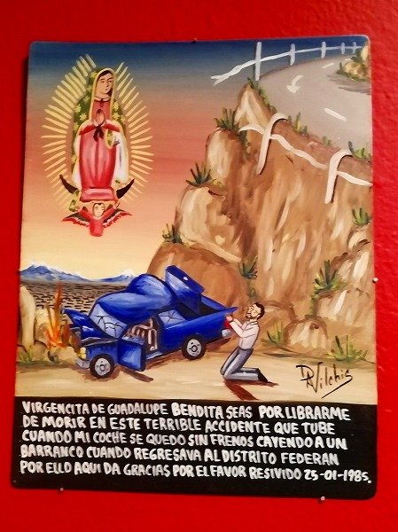
交通事故のエクスヴォトはメキシコではポピュラーだ。

飛行機のエクスヴォトは教会などでは見たことがない。
しかしラグニージャ市場のビルチス氏の店では2点あったので氏の得意な絵柄なのかも。
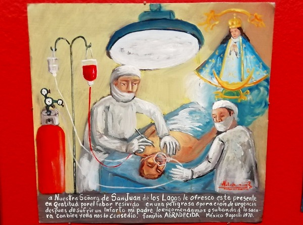
もちろん最もスタンダードな病気モノもあります。
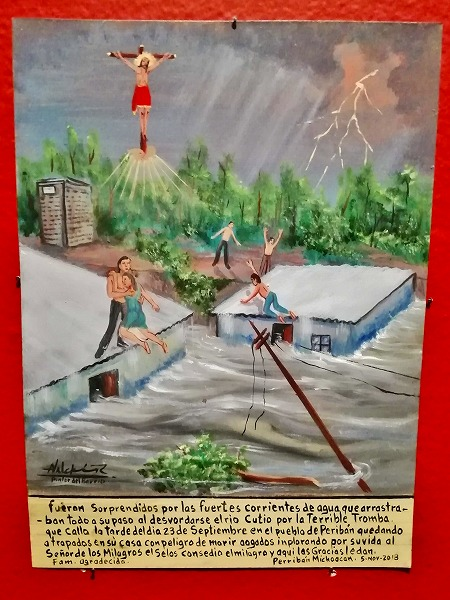
こちらは洪水。
事故、病気、災害などはエクスヴォトで最も多く見られる。
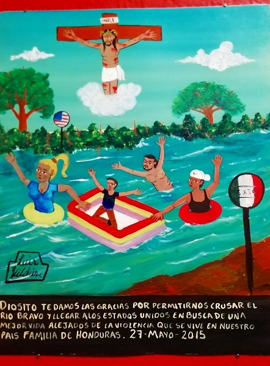
これはチョット判りにくいがメキシコから川を渡ってアメリカに密入国しているシーン。
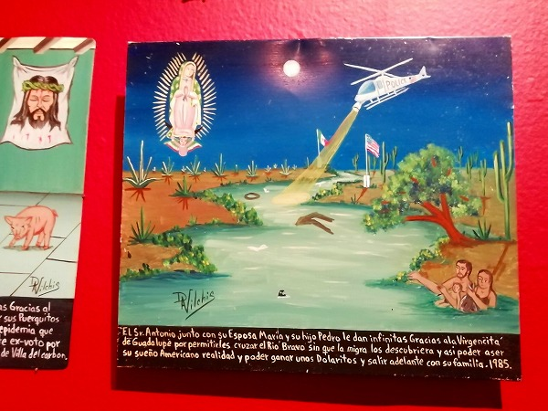
近年、アメリカへの密入国が多いのを反映しているのだろう。
このようにエクスヴォトはメキシコの現代社会の写し鏡となっているのだ。
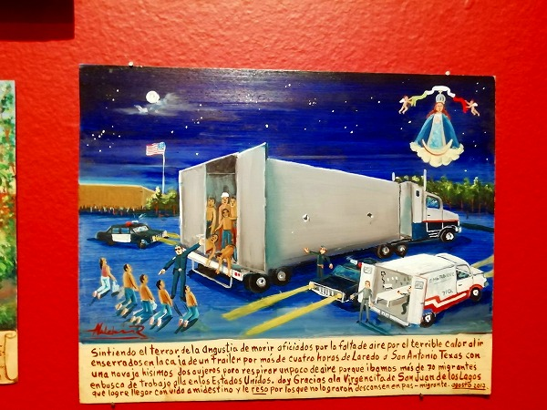
これも密入国関連。
トラックの荷室から密入国者が降ろされている。
トラックの荷室に詰め込められた苦しさが延々と書かれている。
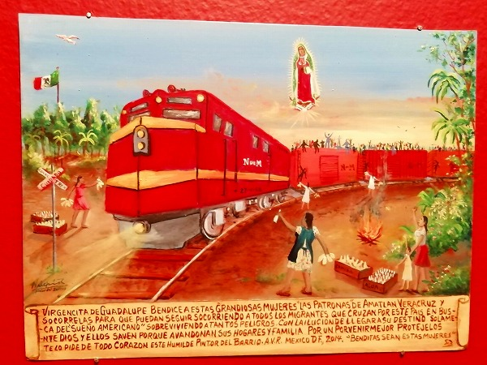
以前写真展でエクスヴォトを展示した際、複数の中南米の人からとにかくスペルミスが多い、という指摘があった。
これは専門の絵師であるビルチス氏は別として、一般的にエクスヴォトを奉納する市井の人々は識字率がそんなに高くなかったからだろう。
字の上手く書けない人にとっても内容がわかりやすいエクスヴォトは人気があったのだろう。
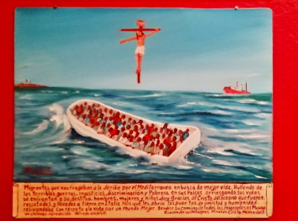
これは船での密入国。
今やメキシコのみならず中南米の様々な国の人々がアメリカを目指している。
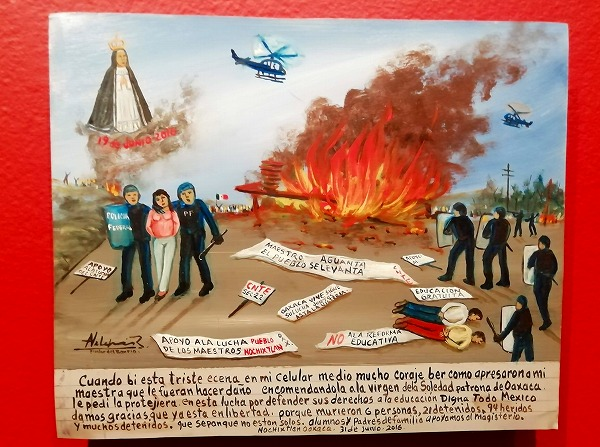
デモで警察に連行されている。
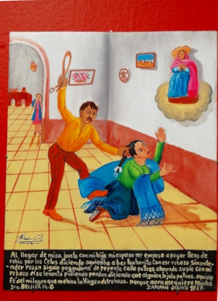
夫の暴力。
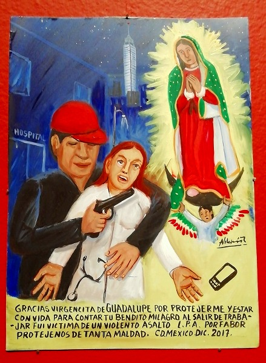
犯罪。
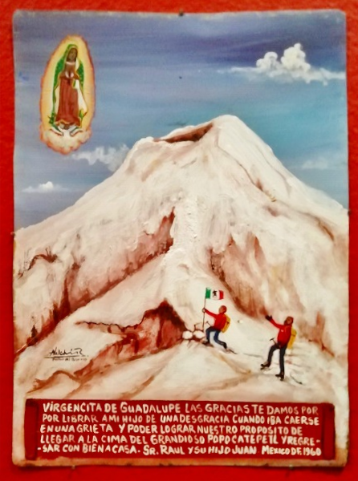
クレバスに落ちそうになりつつも登頂に成功した感謝を綴ったもの。
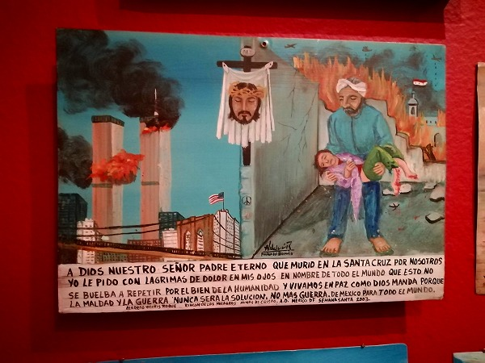
これ以上戦争を繰り返さない様に、との祈りのエクスヴォト。
911のシーンが強烈だ。
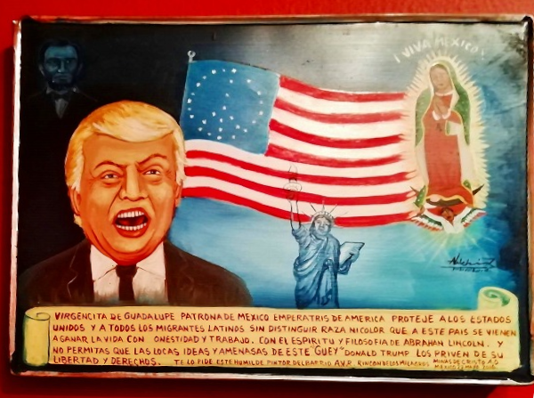
アメリカといえば、この人。
もちろんメキシコ人にとっては好ましくない人物である。
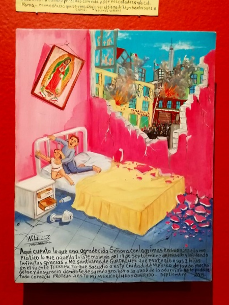
地震の被害も多い。
文中にある9月19日とは1985年のメキシコ大地震のことである。
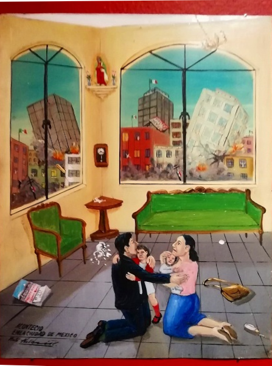
これもまた大地震のシーンか。
上の絵もそうだが、通常上空に現れる神の姿を額縁や棚にあたかも普段からそこにあるかのように自然に配置するテクは見事だ。
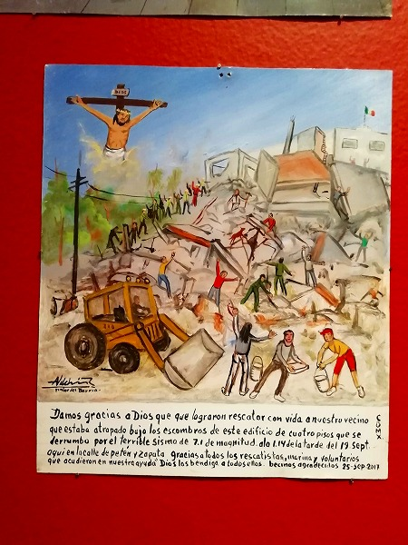
これもまたメキシコ大地震関連のエクスヴォト。
瓦礫の中から救助された人の神への感謝が綴られている。
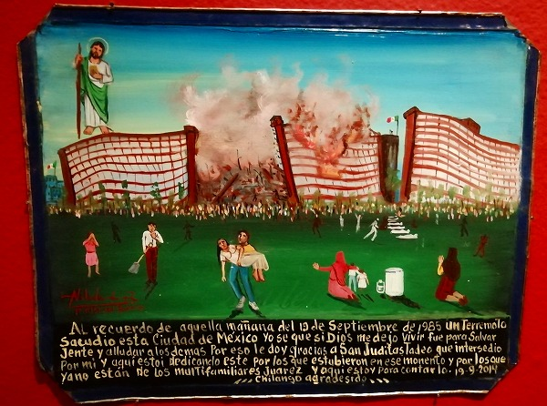
これもメキシコ大地震。
集合住宅が壊滅してしまった様子。

今度は恋愛関連。
これもまたメキシコらしく情熱たっぷりの物が多い。
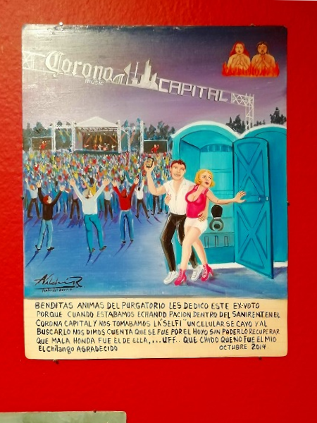
フェスのトイレにスマホを落としたハナシ。
だから何だ？
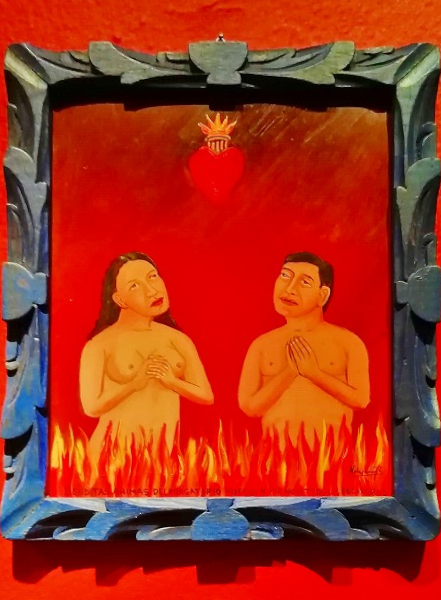
煉獄の火に炙られても二人の愛は永遠よ、的な絵なのでしょうか？
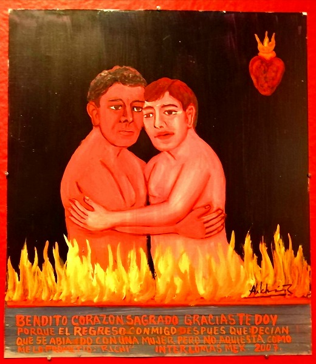
同じ絵柄だが、こちらは男性同士。
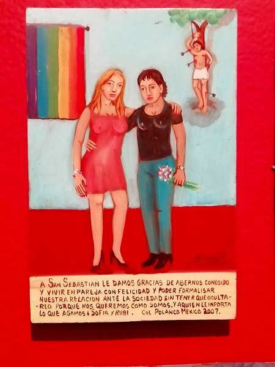
こちらは女性同士。
結婚できたことを報告するもの。
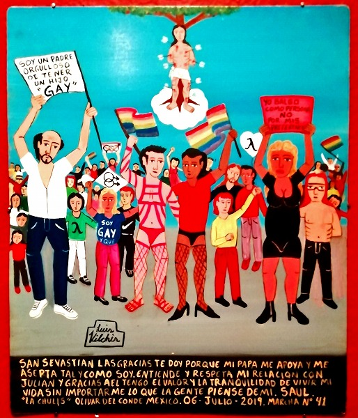
全ての生への開放を謳ったエクスヴォト。
後でキリスト様が矢だらけに。
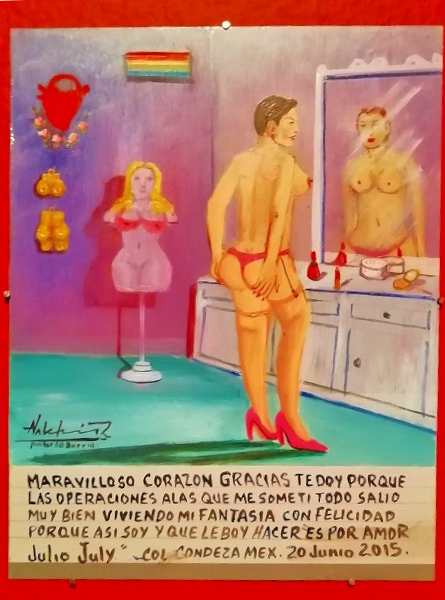
手術の成功に感謝してます。
多分胸の手術の事を指していると思われる。
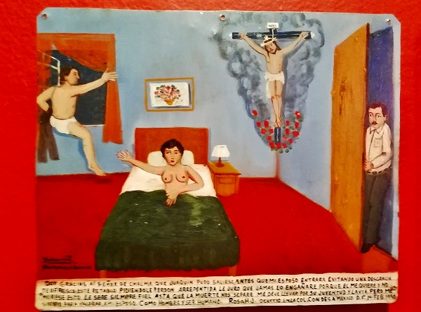
こちらは浮気シーンのエクスヴォト。
夫が帰って来たけど何とかばれずに済みました、的な？
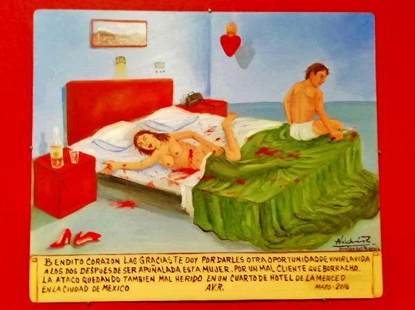
コレは多分刺された女性が娼婦で男が客、で、悪い客に刺されたけど死なずに済んだ、的な絵のようだ。
私のスペイン語とグーグルの翻訳機能を駆使しても何が言いたいのか良く判りません。
いずれにせよ、（チョットおイタはするけれど）奔放で大らかで陽気で優しいメキシコ人気質を見事に表現しているように思える。
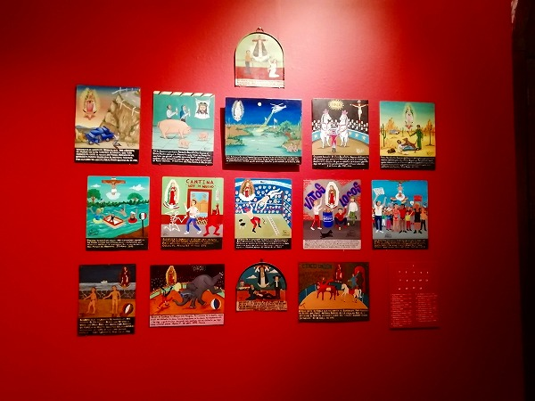
これまで何度も指摘してきたが、エクスヴォトはあくまでも庶民が神への感謝を示す印であって、決してカトリックの教会が主導して行っているものではない。
だからカトリック側が眉を顰めるような同性愛や浮気、犯罪、ドラッグ、売春、中絶、離婚さえもテーマとして上がってくる。
メキシコの庶民の忠実な欲望の写し鏡としてエクスヴォトは機能しているのだ。
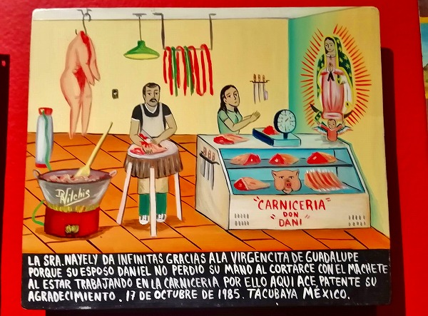
だからこそ私はこのエクスヴォトに魅了されたのだ。
上からの一方的な信仰じゃなくて、下からの圧倒的な信仰。
そこには多少見てくれは悪くとも庶民の本気の信仰が存在している。
そこに綺麗事だけでない信仰のリアルがあると感じたからである。
今回の修行で出会った様々な祈りのカタチ、特にエクスヴォトにおいてはその予見は確信に変わりつつある。
バチカンの考えるカトリックの枠に収まらない欲望と苦しみ。
それはもしかしたらスペイン人がやって来る前の信仰の記憶が現代によみがえったのかも知れない。
…というわけでこの後、お約束の国立人類学博物館を見学したり、松屋で微妙な牛丼喰ったり、テキーラ博物館で色々試飲したりして帰途に着いた。
酒は旨い、食い物は旨い、人は優しい。
実りのある大満足の修行であった。
帰国時に成田空港の検疫で武漢から入国の皆さんはこちらへどうぞ―、的な事をしていたが、今思えばアレが例のあれだったんだなー。
結果、その後数年間海外に出られなくなるわけだが、まあ、それはまた別の機会に…。
メキシコ珍寺武者修行2
おしまい
2020.01.
参照サイトVIVA! MEXICO